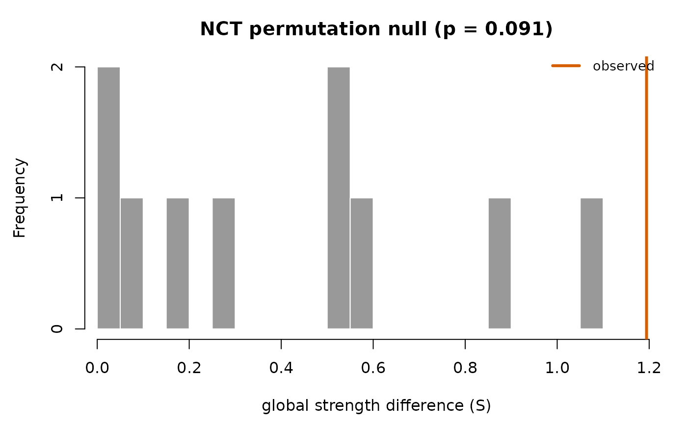
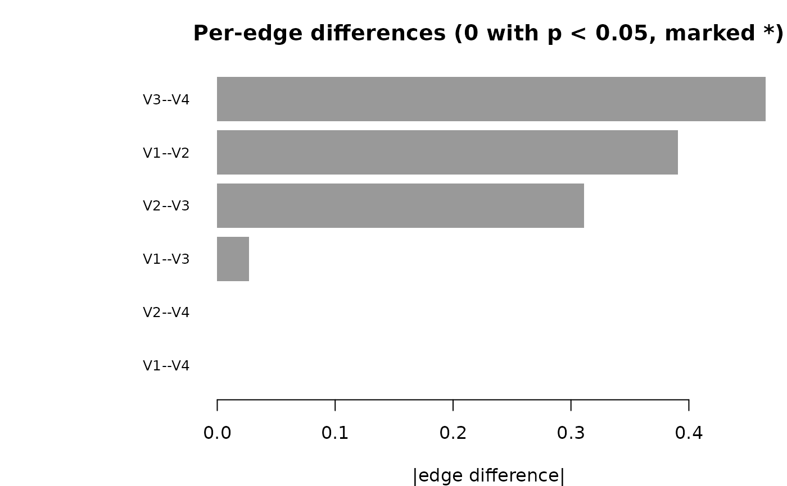

Permutation test for whether two groups' Gaussian graphical models differ,
on three invariants (van Borkulo et al. 2022): network structure (M, the
largest absolute edge difference), global strength (S, the difference in
summed absolute edge weights; with abs = FALSE, summed signed weights,
i.e. global expected influence) and individual edges (E). Networks are
EBIC graphical lassos (clean-room pure R). Equivalent in purpose to NetworkComparisonTest::NCT(), and equal to
it in its permutation draws: under the same seed both permute the same rows,
so the two differ only by the glasso solver's convergence tolerance.
Usage
net_compare(
data1,
data2 = NULL,
iter = 1000L,
gamma = 0.5,
paired = FALSE,
abs = TRUE,
weighted = TRUE,
p_adjust = "none",
na_method = c("pairwise", "listwise")
)
# S3 method for class 'psychnet_nct'
summary(object, alpha = 0.05, ...)
# S3 method for class 'psychnet_nct'
as.data.frame(x, row.names = NULL, optional = FALSE, alpha = 0.05, ...)
# S3 method for class 'psychnet_nct'
print(x, n = Inf, alpha = 0.05, ...)
# S3 method for class 'psychnet_nct'
plot(x, type = c("strength", "structure", "edges"), alpha = 0.05, ...)Arguments
- data1, data2
Numeric data frames/matrices with the same variables, holding finite values or
NA(an infinite value is apsychnet_bad_inputerror). Whendata1is a psychnet_group,data2gives the two levels to compare as they appear in the grouping column, e.g.c(1, 4)for weeks 1 and 4 (default: its two levels when there are exactly two); the group's nodelabelsname the edges, and the group'sgammaandna_methodare used unless you supplygamma/na_method, which then win (with apsychnet_estimator_mismatchwarning when they differ from the group's).- iter
Number of permutations. Default 1000.
- gamma
EBIC hyperparameter. Default 0.5.
- paired
Logical; within-row swapping for paired designs (row
iofdata1and ofdata2are the same unit). DefaultFALSE, except for a group built bypsychnet(..., within = ): its levels hold the same persons, so they are compared paired by person unlesspaired = FALSE(persons seen in only one level are left out, with apsychnet_rows_droppedwarning).- abs
Logical; compare absolute edge weights. Default TRUE.
- weighted
Logical; if FALSE, binarize networks first. Default TRUE.
- p_adjust
Multiple-comparison adjustment for per-edge p-values (any stats::p.adjust method). Default
"none".- na_method
"pairwise"(default) or"listwise"handling of missing values; see Details.- alpha
For the methods: significance level for the
significantcolumn, the*marks and the edge colouring. Default 0.05.- ...
Unused.
- x, object
A
psychnet_nctobject.- row.names, optional
Ignored (S3 consistency).
- n
For
print(): number of edges to list, largest difference first. DefaultInf(all).- type
For
plot():"strength"(default) or"structure"draw the permutation null of S or M with the observed value and p-value marked;"edges"draws the observed per-edge absolute differences, significant ones coloured and marked*.
Value
An object of class psychnet_nct, a list with $nw1, $nw2 (the
two estimated weighted adjacency matrices); the three tests, each with
observed, perm and p_value: $structure (statistic M, the largest
absolute edge difference), $strength (statistic S, the absolute
difference in global strength; also by_group, each network's global
strength) and $E (per-edge absolute differences; also edge_names, a
from/to data frame aligned to the per-edge vector); plus n_iter, n
(rows used per group), groups (display names: the argument names, or
the group levels), paired and params. The letters follow van
Borkulo et al. (2022) and NetworkComparisonTest; $M and $S (which
before psychnets 0.6.0 held the two global tests the other way round) raise
a psychnet_renamed error.
print() shows every result: the two global tests, each group's global
strength, the number of differing edges and every edge, largest
difference first. summary() returns a data frame with one row per
global test, columns test ("network structure"; "global strength",
or "global expected influence" when abs = FALSE), statistic ("M",
"S"), observed, p_value and significant (p_value < alpha).
as.data.frame() returns one row per node pair, columns from, to,
weight_1, weight_2 (the edge in each group's network; 0/1 when
weighted = FALSE), difference (absolute difference, statistic E),
p_value (permutation p, adjusted by p_adjust), p_raw (the same
permutation p before adjustment; equal to p_value when p_adjust = "none") and significant (p_value < alpha, i.e. on the adjusted p).
The global M and S tests are never adjusted.
print() and plot() return x invisibly.
Errors of class psychnet_bad_input for malformed arguments or groups
whose columns differ (in name or order); of class
psychnet_degenerate_sample when (pairwise) a variable pair shares fewer
than two observed rows in a group or a permuted split. Warnings of class
psychnet_constant_variable (a constant variable in an observed group) and
psychnet_estimator_mismatch (a group object built with an estimator or
settings other than EBIC glasso, or compared with a gamma / na_method
other than the group's own).
Details
The two groups must hold the same variables in the same order (non-numeric columns such as an id or a group label are dropped first).
Missing data follow na_method. "pairwise" (default) keeps every row,
permutes rows as usual, and estimates each (sub)sample from its
pairwise-complete correlation matrix (projected to the nearest positive
definite correlation matrix), with the median pairwise co-observation count
as the sample size – the same treatment as ebic_glasso(). "listwise"
drops incomplete rows first (in a paired design, a pair is dropped when
either member is incomplete). Complete data are unaffected by the choice.
A variable without variation in a group, or in a permuted split (a rare
binary item can be constant in a split), enters that network as an isolated
node – the convention of every psychnets estimator for a constant column.
The statistic is then defined on every split, so the permutation test stays
exact. A constant variable in an observed group raises a
psychnet_constant_variable warning.
Functions
summary(psychnet_nct): The M and S tests as a table.as.data.frame(psychnet_nct): The per-edge tests, one row per node pair.print(psychnet_nct): Every result, edges largest difference first.plot(psychnet_nct): Permutation null of S or M, or the per-edge differences (seetype); significant edges are labelled*as well as coloured.
References
van Borkulo, C. D., van Bork, R., Boschloo, L., Kossakowski, J. J., Tio, P., Schoevers, R. A., Borsboom, D., & Waldorp, L. J. (2022). Comparing network structures on three aspects: A permutation test. Psychological Methods. doi:10.1037/met0000476
Examples
set.seed(1)
# group a has a stronger chain than group b
a <- matrix(stats::rnorm(100 * 4), 100, 4) %*% chol(0.5^abs(outer(1:4, 1:4, "-")))
b <- matrix(stats::rnorm(100 * 4), 100, 4) %*% chol(0.2^abs(outer(1:4, 1:4, "-")))
colnames(a) <- colnames(b) <- paste0("V", 1:4)
# iter = 10 keeps the example fast (smallest p = 1/11); use iter >= 1000.
fit <- net_compare(a, b, iter = 10)
fit
#> Network Comparison Test: a vs b
#> 10 permutations, independent groups, n = 100 and 100
#>
#> Test Statistic p
#> M network structure 0.465 0.091
#> S global strength 1.194 0.091
#> a 1.194 vs b 0.000
#> E edges differing 0 of 6
#>
#> Edges, largest difference first
#> Edge a b |diff| p
#> V3 - V4 0.465 0.000 0.465 0.091
#> V1 - V2 0.391 0.000 0.391 0.091
#> V2 - V3 0.311 0.000 0.311 0.182
#> V1 - V3 0.027 0.000 0.027 0.818
#> V1 - V4 0.000 0.000 0.000 1.000
#> V2 - V4 0.000 0.000 0.000 1.000
#>
#> * p < 0.05
print(fit, n = 3) # the three largest edge differences
#> Network Comparison Test: a vs b
#> 10 permutations, independent groups, n = 100 and 100
#>
#> Test Statistic p
#> M network structure 0.465 0.091
#> S global strength 1.194 0.091
#> a 1.194 vs b 0.000
#> E edges differing 0 of 6
#>
#> Largest edge differences (3 of 6)
#> Edge a b |diff| p
#> V3 - V4 0.465 0.000 0.465 0.091
#> V1 - V2 0.391 0.000 0.391 0.091
#> V2 - V3 0.311 0.000 0.311 0.182
#>
#> * p < 0.05
summary(fit)
#> test statistic observed p_value significant
#> 1 network structure M 0.4649198 0.09090909 FALSE
#> 2 global strength S 1.1942892 0.09090909 FALSE
as.data.frame(fit)
#> from to weight_1 weight_2 difference p_value p_raw significant
#> 1 V1 V2 0.39093075 0 0.39093075 0.09090909 0.09090909 FALSE
#> 2 V1 V3 0.02711333 0 0.02711333 0.81818182 0.81818182 FALSE
#> 3 V2 V3 0.31132529 0 0.31132529 0.18181818 0.18181818 FALSE
#> 4 V1 V4 0.00000000 0 0.00000000 1.00000000 1.00000000 FALSE
#> 5 V2 V4 0.00000000 0 0.00000000 1.00000000 1.00000000 FALSE
#> 6 V3 V4 0.46491980 0 0.46491980 0.09090909 0.09090909 FALSE
plot(fit) # global strength permutation null

plot(fit, type = "edges") # per-edge differences
